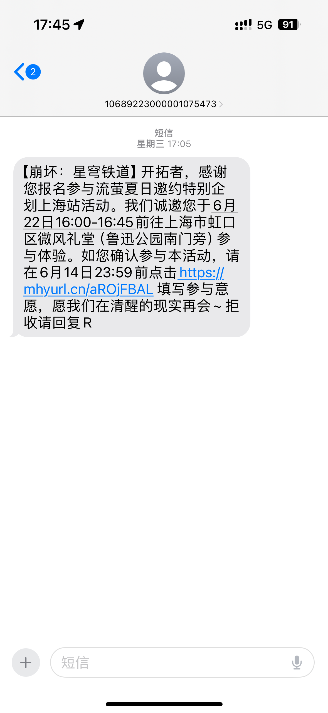
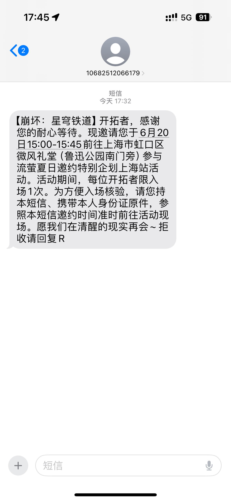
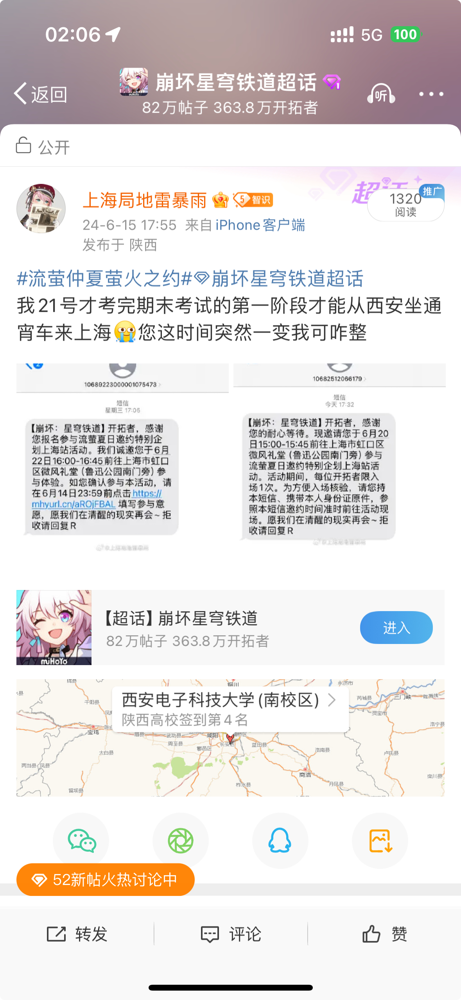
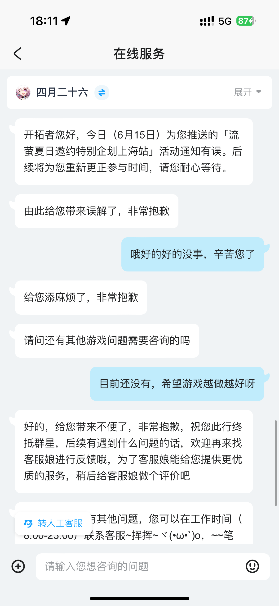
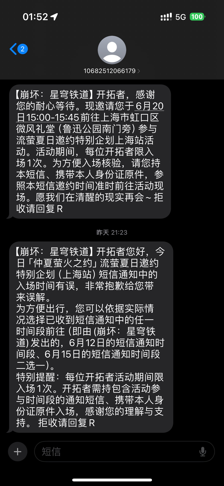

仲夏·后老老八书
作为同属米哈游的游戏《崩坏：星穹铁道》的新版本预热活动的一部分，这个活动虽然没有「原神FES」那么浩大但还是有一定人流的。在全国各大城市都有各自的活动；但在上海是活动最多的，因此不可避免地有很多人都报名。因此这次活动用了预约抽签制来报名——报名者先通过游戏官方所提供的问卷预约，之后官方对这些预约信息随机抽签，抽到的预约信息对应的玩家才能够收到来自官方的邀请前往。我非常难得地拥有了这么好的运气，在6月12日下午4点（抽签完成后官方发送邀请函的第一天）就收到了邀请。
在收到邀请前就已经做好了计划。由于这个学期的期末考试非常紧凑且正好在6月21日结束了第一阶段的5门考试（总共6门），我只能选择活动的最后一天6月22日作为出行意愿。显然西安到上海的铁路时长不会短，所以要想在日落之前赶上活动，我必须在午前到达上海——因此我在21日晚上就从西安站出发乘坐既有线动力集中式动车组列车，在第二天中午到达上海。回程的方式也类似；由于中签时间是6月22日16:00—16:45，在12:30到达上海后我仍然有比较充足的时间进行其他活动。而在我22岁生日（6月6日）那天惊闻“老老八”（01A01型客车）在5日早高峰后再也没有出现过，因此这次线下快闪活动也成为了我目击其最老的后代“伪八二世”的契机。
出发前的小插曲
6月12日收到短信时我正在给我的舍友们拍毕业照。当时我自然是大声庆祝，随后是将我的运气发送到了微博上。因为在“中奖”之前我就已经把往返的车票买好了，——主要是考虑到西安大学生很多，中奖名单公布之后可能会掀起一股空前绝后的西沪大运，导致票不好买，再加上后续忙于备考可能会忘记买票，——所以后来就继续备考，在立即按短信中的指引回复了参加意向之后就没有管了 。

6月15日，我突然收到了一条参加意愿的确认函。毫无疑问这也是官方的消息，但入场的时间由22号变为了20号。

我在预约时也没有勾选20号的任何选项——更何况那天我一早一晚一共有2门考试，就算是坐飞机也没办法按短信的时间到场。打开微博发现遇到这个问题的并不只有我一个，所以立刻去问客服了。幸而客服回复说是他们那边发送的问题，后续会重新更正；悬着的心就又放了下来。



在躲过一劫后，便带着欢快的心情继续备考了。由于不想因为考试成绩低下对此次行程的心情造成影响，这次的备考历程较往年显得更加精细；在这里就不再说了。